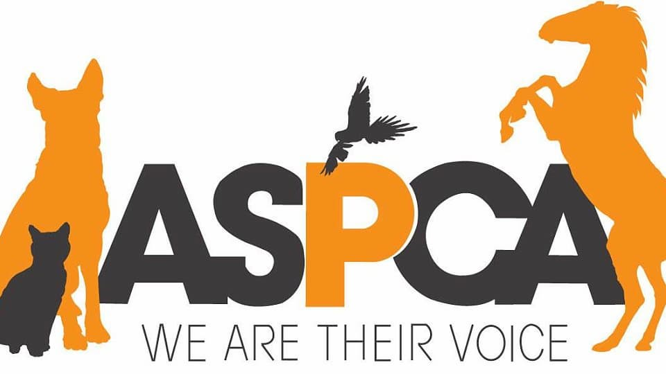

Adoption is a wonderful option that is often overlooked when it comes to getting a new dog. Many people dont realize how many animals need a new home. Adoptin centers are unfortionately typically overcrowded with animals needing a new lease on life. People soemtimes think getting a puppy is the best option when there are plenty of dogs of all ages that are ready to love you just as much! Being in New York City there are many organizations that are ready to help pair you with your new best friend.
The ASPCA is a major organization that is based all over the country, dedicated to saving animals. The ASPCA is often in collaboration with local authorities to make sure these animals arent in the wrong hands. Sadly underground animal fight rings and animal abusers are very real and these people are dedicated to make sure the animals are rehabilitated and placed in new loving homes.
Social media has helped immensely getting these animals into new homes by simply having a bigger outreach than a stand alone adption center without an online presence. These centers and organizations are able to post these dogs and win internets heart over. The Sato Project and Muddy Paws are just 2 examples of social media accounts that are responsible for getting thousands of dogs addopted each year!
The Dog Spot Purebred Muts Adoption Training